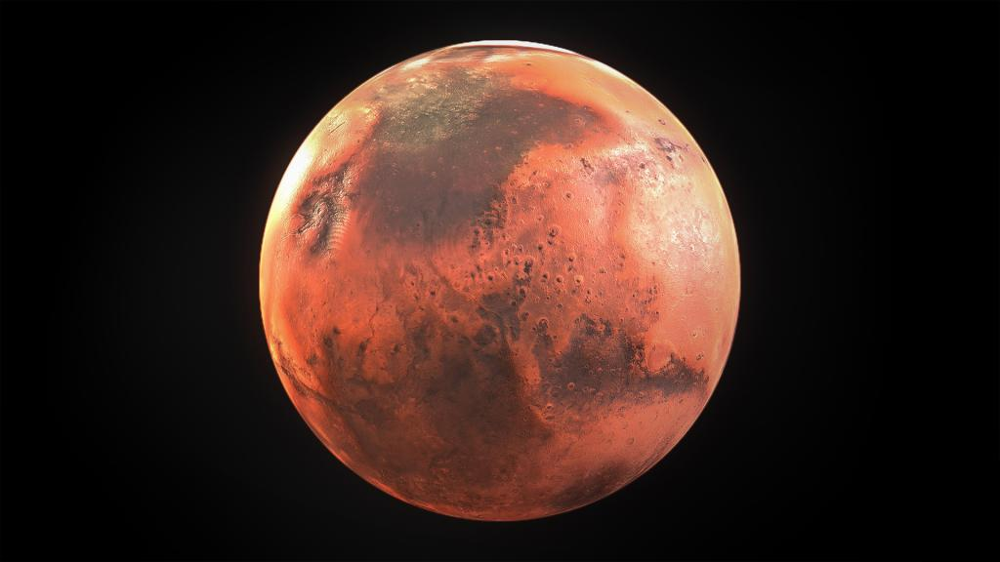

Если бы я был живым организмом то такое могло быть моё хобби:
 Привет, я Марс, и у меня есть свое увлечение - астрономия. Как планета, я всегда был увлечен наблюдением за звездами, планетами и галактиками. Каждую ночь, когда земляне смотрят вверх на небо и восхищаются его красотой, я тоже наслаждаюсь этим зрелищем. Мое хобби включает в себя изучение различных астрономических явлений, таких как звездные вспышки, падающие метеориты и солнечные затмения. Я также увлечен исследованием космических миссий и открытием новых планет и галактик. Когда земляне отправляют свои космические аппараты на исследование моей поверхности, я радуюсь возможности предоставить им уникальные данные и фотографии. Мое хобби помогает расширить наше понимание о Вселенной и вносит вклад в научные исследования.